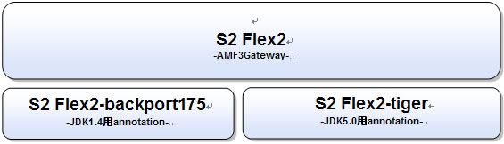

S2Flex2
S2Flex2は、現在英語版としてリリースされているFlex2とSeasar2を連携させるものです。 S2Flex2を使うとFlex2で作成されたFlashアプリケーションからSeasar2に登録されているコンポーネントを簡単に呼び出すことができるようになります。
S2Flex2は現在のところ以下のプロジェクトで構成されています。

- S2Flex2
- S2Flex2-Backport175
- Backport175 アノテーションを利用して、メタデータ定義、セッションデータのバインディングをJavaソースに記述する為のアドオン
- Java実行環境がJ2SDK1.4のときに利用します。Tiger(Java5)でS2Flex2を利用するときには、S2Flex2-Tigerを利用してください。
- S2Flex2-Tiger
- Tiger (Java5) アノテーションを使用してメタデータ定義、セッションデータのバインディングをJavaソースに記述する為のアドオン
- Java実行環境がTiger(Java5)の時に利用します。J2SDK1.4でS2Flex2を利用するときには、S2Flex2-Backport175を利用してください。
- S2Flex2-components
- S2Flex2のGatewayに接続するmxmlタグコンポーネント
[2006/09/14]s2Flex2 1.0.0 rc-2 リリース
- FlexのArrayのJavaへのマッピングの改善しました。
- Readerの修正＆リファクタリングをしました。
[2006/09/13]s2Flex2-tiger 1.0.0 rc-2 リリース
- ・Export/Importタグで、getter/setterどちらか一方のみあるときに例外が発生する不具合を修正しました。
[2006/09/13]s2Flex2-backport175 1.0.0 rc-2 リリース
- ・Export/Importタグで、getter/setterどちらか一方のみあるときに例外が発生する不具合を修正しました。
[2006/08/29]s2Flex2 rc-1リリース
- Message関連のクラスを整理(Interface->Classになったことでamf3.diconの変更)
- S2AnAに対応するためにAMFのHeaderについて、実装を進めました。
- s2-container2.4-rc1に対応しました。
- Flex側から連想配列を渡した際にkeyの値が小文字になってしまうのを修正しました。
[2006/08/28]akabana-userメーリングリスト開設
S2Flex/S2Flex2/Akabana関連のメーリングリストを新規に開設いたしました。
機能、利用方法、設定等を質問やご要望がありましたらこちらのページにあります、メーリングリストにご登録いただき、ご意見ください。
[2006/08/7]S2Flex2 Beta7リリース
※S2Flex2 Beta7よりS2Containerは2.4のみ対応となっています。
S2Flex2 Beta7をリリースしました。
- Flex2 リリース版での動作を確認いたしました。
- S2Container 2.4-Beta4に対応しました。
- パッケージを見直してリファクタリングしました。
- サービスクラスに対してaspectが効かないのを修正しました。
- Sessionに登録したコンポーネントが、Servletや別のswfなどで共有されない不具合を修正しました。
- Seasar2 2.4Beta4のHotDeploy/CoolDeployに対応しました。
- AMF3のByteArray型への対応を追加しました。
- AMF3のExternalizableを実装したクラスへの対応
- 上記にともなうdiconファイルの変更
- Metaタグの変更(AmfRemotingService ->RemotingService)
S2Flex2 Backport175 Beta3をリリースしました。
- S2Flex2のBeta7にあわせてMetaタグの変更(AmfRemotingService ->RemotingService)
- 上記に伴うアノテーションの変更をしました。
S2Flex2 Tiger Beta3をリリースしました。
- S2Flex2のBeta7にあわせてMetaタグの変更(AmfRemotingService ->RemotingService)
- 上記に伴うアノテーションの変更をしました。
S2Flex2-components Beta5をリリースしました
- Flex2 リリース版(英語版)に対応しました。
- 配布しているファイルではantを利用してswcを生成することができなかったのを修正しました。
- アイコンファイルを追加しました。(S2Flex2Service)
以前のお知らせ
|